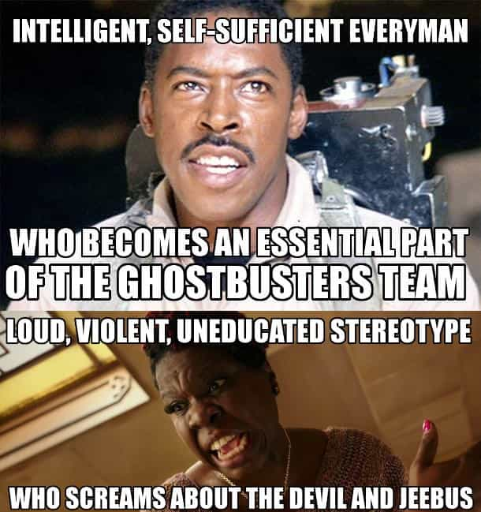

< < < Back
The World Is Revolting Against Hollywood’s Awful Feminist Remake Of Ghostbusters – Return Of Kings
The new Ghostbusters 3 is all shades of terrible. Combining affirmative action with casual racism (the three white characters are “scientists,” the black woman is some sort of glorified ghetto girl), this excuse for a remake has been forced to sell itself through the use of sick kids and lame trailer jokes that include a rip-off from The Exorcist’s line “The power of Christ compels you.” However, the public is rebelling, with overwhelming condemnation of the film’s premise and even existence.
Either those who saw the new trailer are all Return Of Kings readers, capable of discerning cinematic propaganda, or the general population is more astute than we give them credit for. Two-thirds of the trailer viewers have “disliked” it, perhaps vindicating the desperation of actresses Melissa McCarthy, Kristen Wiig, Kate McKinnon and Leslie Jones in promoting the film by having photo ops with kids dying of leukemia and the like. Sony has responded with a mass delete campaign to thousands of comments left on the trailer.
No one has adequately explained why, in a world where everything from Microsoft to Snapchat is male-generated, the new globe-saving paranormal clean-up team is all female. Just because is what we have been told. Is it not enough, for example, that women, without superior qualifications, are prefered 2-1 for STEM faculty positions? Evidently not.
In multiple areas, including gender, race and the celebration of obesity, Ghostbusters 3 is a symbol of more or less everything that is wrong with both society and the filmmaking industry seeking to protect it. For your own self-respect, we vociferously recommend you keep further away from this film than Melissa McCarthy does from diets and good exercise.
Sick kids, anyone?
Sick child does not want actors from a political movie at his bedside
To show that affirmative action was not nearly enough for them, the cast of Ghostbusters 3 shamelessly paraded themselves in a hospital full of sick kids last year. Forgetting the inconvenient detail that the film was months from being released, and the whole idea of film character visits are meant to be about kids knowing who the dressed-up people are, a large number of commentators online were left gushing and awwing over the supposedly wonderful gesture of the four female leads.
Thankfully, what seems to be a majority saw through the ruse. There is a massive qualitative difference between visiting sick children in character in general terms and doing so when the promotion stage is in full swing. Sure enough, a film star like Russell Crowe dressing up as Maximus Decimus Meridius would gain some social and even financial benefit from visiting suffering young people dressed in attire from Gladiator. Yet the advantage he can receive, considering the film was released a decade and a half ago, is far less.
People will surely criticize me and say, “David, what’s the problem if the women made some sick kids smile? It’s a kind-hearted act.” For a start, whether the kids smiled or not (and a photo is only a snapshot) is entirely irrelevant to the cast using terminally ill children to promote a film. Our conception of charity has regressed to the point where commercial advertising and charitable deeds are regularly conflated. We need not rely on Hollywood to make this assessment: Facebook and Instagram are full of people, often attention-seeking females, claiming acts of charity so as to garner the accolades of their “friends.”
All smiles to promote a feminist movie while child in the background appears unconscious
Although I am not a Christian myself, the Ghostbusters 3 PR stunt reminds me of the New Testament parable about the “charity” of the rich and self-promoting versus the true generosity of the poor and modest. In this example told by Jesus, the wealthy men gather in the temple to give vast sums of money as publicly as they can, while a solitary old woman, frail and otherwise penniless, produces a single coin that she gives quietly in the corner. Not only does the woman give more because of the comparatively very high value of the coin for her, she does so in a way that actually resembles helping others, not helping one’s image. For the rich men, doling out their “riches” for praise represents nothing to them because they have so much more.
Ghostbusters 3 and race
Leslie Jones could pass for John Coffey’s brother but her Ghostbusters 3 character is actually a great deal different, i.e. stupid and stereotypical.
As I alluded to above, Leslie Jones’ character is an over-the-top Queen Latifah-style character, embodying everything that is stereotypical of and arguably wrong about African-American women. Fittingly for a film which concerns the paranormal, she is the quintessential Magic Negro character, bringing the main characters together courtesy of her street knowledge and the provision of, yes, you guessed it, a hearse for the group’s transportation. Jones does remind me of the attacks against The Green Mile and the character John Coffey, except the latter figure was falsely maligned in a good film. By contrast, the excoriation of Ghostbusters 3 and its hood-dwelling black member is valid.
Amusingly, the visceral racism of Ghostbusters 3 has been replicated by Tina Fey recently. Her film Whiskey Tango Foxtrot depends on overdone race jokes and the casting of white actors to play ostensibly Middle Eastern characters. But, hey, her feminist pass checks out. Like Melissa McCarthy, who avoids serious scrutiny because her embracing being fat “emancipates” fellow overweight females, Fey’s reputation will escape largely unscathed. Apparently earning millions of dollars for yourself in the name of girl power excuses you.
Let us look deeper, though. Popular culture reflects the views of its creators. Leslie Jones’ Ghostbusters 3 character is exactly the sort of readily angered black woman liberals want. Beat-ups like in Ferguson, Missouri depend on this drastically dumbed-down caricature of African-Americans. Similarly, the proliferation of unashamedly fat women like Melissa McCarthy in films makes feminists and their enablers happier about themselves and their imminently approaching lives as cat-tending isolates.

How much money will Ghostbusters 3 lose for having a political agenda?

Jimmy Kimmel, like others, was forced to mischaracterize Return of Kings in even attempting to land blows on us.
Persecution of Return Of Kings has been commensurate with our website’s reach over the past year or so. From Canada in August last year, when SJWs tried to hunt down Roosh like a crude Gestapo would, to the 1984 hate we received for our planned meet-ups, leftists fear our message and critique of popular culture. In between, we ensured our readers and others could make appropriate choices about whether or not to see copycat J. J. Abrams’ The Force Awakens. Expect negative responses to us for daring to question Ghostbusters 3 and its agenda of women-just-because, minority-stunting stereotypes and exploiting sick kids for Sony Pictures’ gain.
At the end of the day, if the message and meaning of this new film is so significant, why is criticism of it utterly dismissed or suppressed in the name of “fighting misogyny”? This is the sort of question advocates for this terrible excuse for popular entertainment fail to answer. You know your product is a bung one when you require kids with diseases to unknowingly sell it.
We urge readers and others to boycott this film at all costs. Do not add to Sony Pictures’ feminist-loving coffers or help pay for Melissa McCarthy’s next cheeseburger.
Read More: The New Ghostbusters Movie Will Be Ruined By The Feminist Agenda